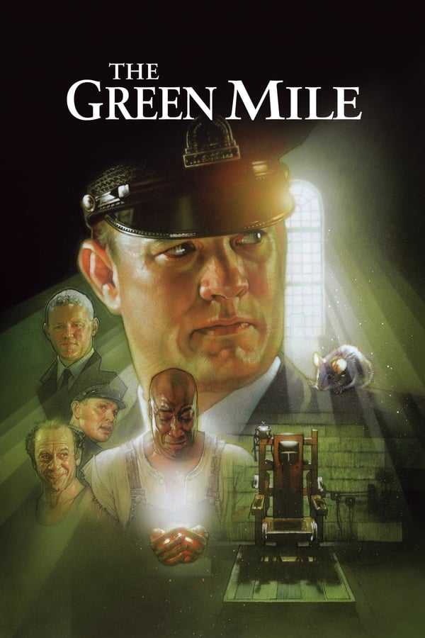
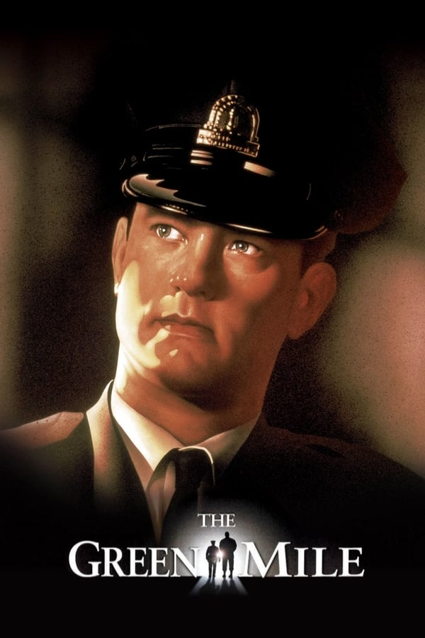
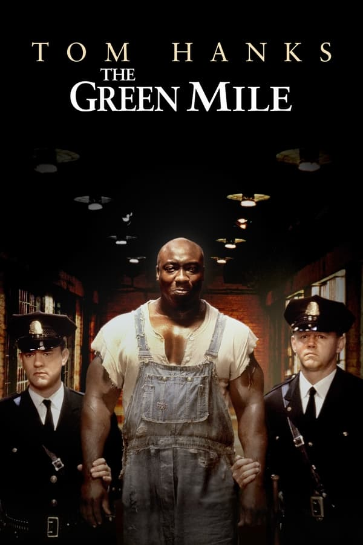
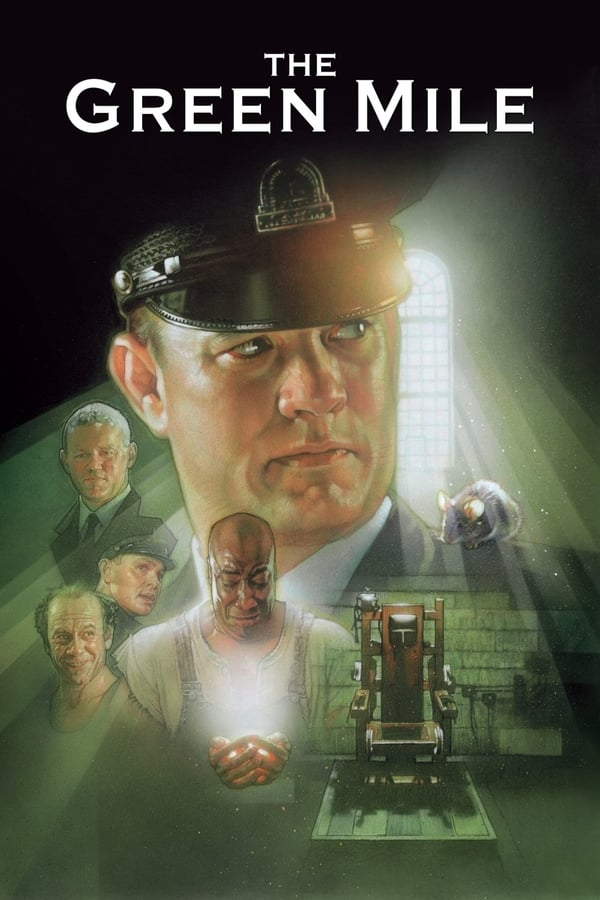
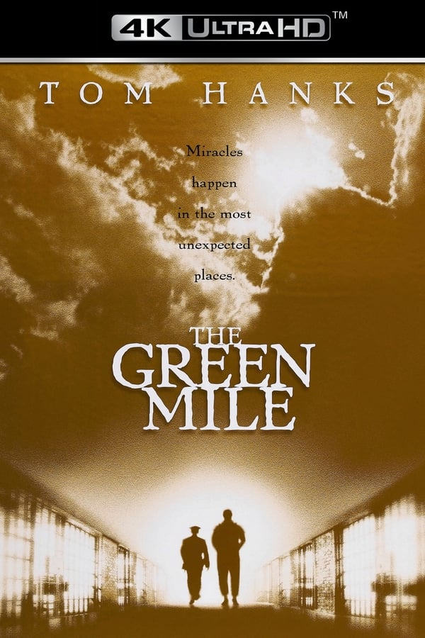

The Green Mile (1999)
PG Fantasy, Drama, Crime 3h 9m
Paul Edgecomb didn't believe in miracles. Until the day he met one.
Overview
A supernatural tale set on death row in a Southern prison, where gentle giant John Coffey possesses the mysterious power to heal people's ailments. When the cell block's head guard, Paul Edgecomb, recognizes Coffey's miraculous gift, he tries desperately to help stave off the condemned man's execution.
-
Director, Screenplay
-
Novel